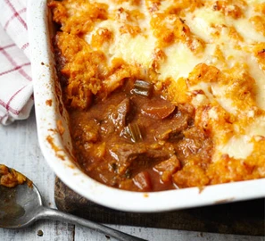

Beef Stew and Sweet Potato Recipe

Description
Beef stew with sweet potato topping is a hearty and comforting dish that combines tender chunks of beef with a rich, flavorful broth, and is finished with a layer of mashed sweet potatoes. This combination creates a delightful contrast between the savory stew and the slightly sweet, creamy topping
Ingredients
- 1 tbsp olive oil
- 1 onionm finely diced
- 2 carrots, finely diced
- 1-2 sticks celery, finely diced
- 2 fat cloves garlic, crushed
- 400-500g braising steak
- 1 tsp ground cinnamon
- 1 low-salt beef stock cube
- 2 tbsp tomato puree
- 1kg sweet potatos
- knob of butter
- handfull of grated cheddar
Steps
- Heat the olive oil in a heavy-based pan. Add the onions and cook for 2 mins, then add the carrot and celery and cook until softened. Add a little water if the mixture sticks.
- Add the braising steak and cook until browned, then stir in the garlic and cinnamon and cook for a further 1 – 2 mins until the aromas are released.
- Add the stock cube to 500ml boiling water and stir into the meat, along with the tomato purée and parsley stalks. Bring to the boil and simmer covered for 1 hour, then take off the lid and simmer for another hour or until the meat is very tender. Stir in the chopped parsley leaves.
- Transfer the stew into a medium-sized ceramic dish (that would be big enough for four adults), or into 6 - 8 large ramekins for make-ahead toddler portions.
- Meanwhile, steam or boil the sweet potatoes until tender. Preheat the oven to 200C/180C fan/gas mark 6. Drain the potatoes well and mash with the butter. Spoon on top of the meat, sprinkle with the cheese and cook on the top shelf for around 20 minutes until golden and bubbling.
- Alternatively, cover and freeze the pie or mini pies for another time. Defrost thoroughly before cooking - you can do this by leaving it in the fridge overnight if you like. Preheat the oven to 200C/180C fan/gas mark 6 and cook for around 30 - 35 mins or until golden, bubbling and hot throughout.